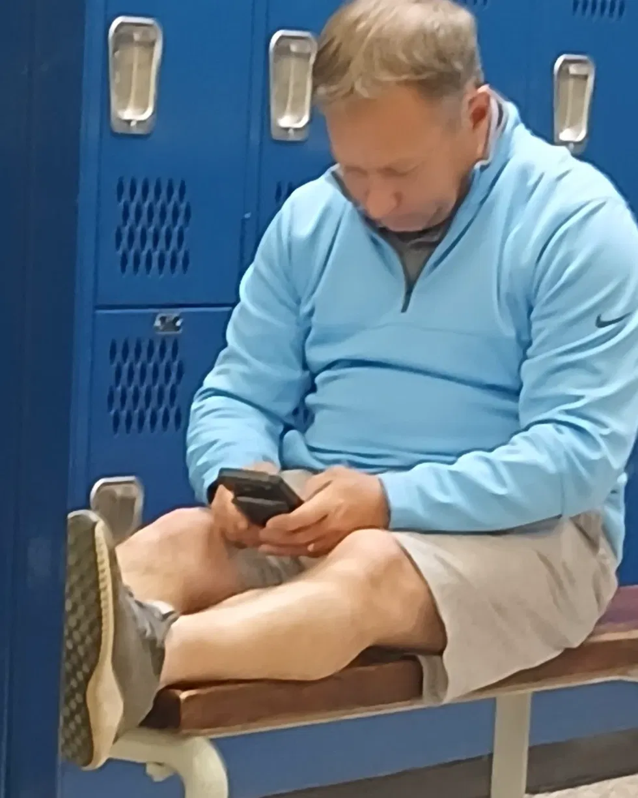

LAST KNOWN PHOTO
Case File #001
"Helper House"
a.k.a. The Quarter-Zip Phantom · He Who Scrolls · The Bench Whisperer
| Status | CRISIS (upgraded by unanimous group-chat vote) |
|---|---|
| Last seen | A locker-room bench, deeply absorbed in his phone |
| Wearing | Sky-blue quarter-zip of unshakeable confidence, khaki shorts, sneakers built for greatness |
| Distinguishing features | Thumbs of a champion. Aura of a man about to hit the gym. |
| Past actions | Questionable. Under review. Paused for the duration of the crisis. |
| Approach with | Caution, and a protein shake |